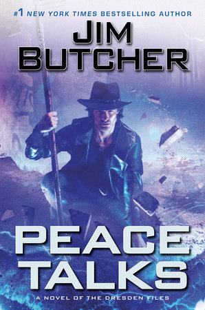

The Dresden Files series by Jim Butcher centers around the only professional wizard and private detective Harry Blackstone Copperfield Dresden. Harry Dresden the gun toting, spell slinging, and snarky wizard finds himself caught up in mysteries where the safety of the world and his beloved hometown of Chicago are at risk. Harry along with his friends, Karrin Murphy (Chicago PD), Michael Carpenter (Warrior of God), Thomas Wraith (half-brother, half Vampire) and his enormous dog Mouse, are all saving the world from the things that go bump in the night.
Peace Talks is the sixteenth book in the series. After a several years hiatus Jim Butcher brings the series screaming back to life as Harry is playing in a high stakes political game between the realms of fairy and the mortal world. As well as some unexpected family drama when his half-brother, Thomas Wraith, is implicated in the attempted murder of supernatural head of state…. oh, and Thomas’s girlfriend is pregnant.
Harry caught between the White Council of Wizards, the evil Fomor, his old friendly rival and gang leader “Gentleman” John Marcone are summoned to a peace summit. Harry has been tasked by his fairy patron, Queen of Darkness and Air, Mab to help the White Court of Vampire in rescuing Thomas. All the while not letting anyone at the peace summit know lest Harry embarrass Mab…a fate worse than death. The cherry on top Harry has also been tasked by the Senior Council of the White Council with their protection and the peace summit.
Fear is a prison. But when you combine it with secrets, it becomes especially toxic, vicious. It puts us all into solitary, unable to hear one another clearly.
Jim Butcher says about Peace Talks.
Peace Talks is a return to form for Jim Butcher . The stakes could not be higher for our lovable rogue wizard Harry Dresden. Just as he is starting to get his feet back on a solid foundation the world throws him some of the biggest curve balls yet. The tension and mystery in this book have been some of the best in the series keeping the read guessing and asking questions the whole way through.